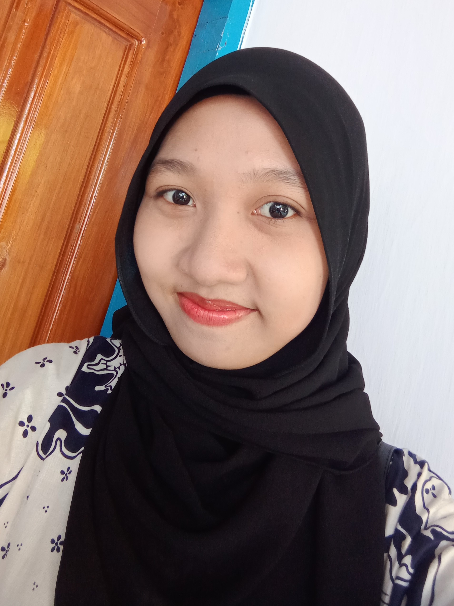

Dinda Mulyasari

Tentang Saya
Saya merupakan seorang mahasiswa aktif di Universitas Abdurachman Saleh Situbondo. Saya adalah seorang yang mudah beradaptasi dengan lingkungan baru. Seorang yang cekatan, sigap, dan mampu bekerja individu maupun dengan tim.
Keahlian Saya
- Manajemen waktu
- Kolaborasi
- Microsoft office (Ms. Word, Ms. Excel & Ms. Power Point)
- Canva
Pendidikan Saya
- SDN 4 Curah Jeru (2008-2014)
- SMPN 3 Situbondo (2014-2017)
- SMAN 1 Situbondo (2017-2020)
- S1 Administrasi Publik Universitas Abdurachman Saleh Situbondo (2020-sekarang)
- S1 Matematika Universitas Abdurachman Saleh Situbondo (2021-sekarang)
Pengalaman Saya
- Anggota Ambalan Pramuka SMAN 1 Situbondo (2017-2019)
- Anggota PMR SMAN 1 Situbondo (2017-2018)
- Sekretaris Umum PMR SMAN 1 Situbondo (2018-2019)
- Anggota BEM FISIP UNARS (2022-sekarang)
- Anggota PIK-R UNARS (2022-sekarang)
Kontak Saya
Instagram |
WhatsApp |
LinkedIn